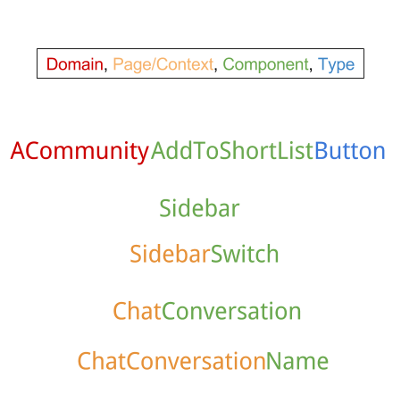

Type Checking
- use Flow or TypeScript instead of PropTypes for larger code bases
- Flow
- adding to a project
- navigate to folder and run:
npm install --save-dev flow-bin or yarn add --dev flow-bin
- add flow to the "scripts" section of package.json: { "scripts": { "flow": "flow", ... }, ... }
- create a Flow configuration file that you will need to commit:
npm run flow init or yarn run flow init
- add flow to files with // @flow annotation at the top of a file, or confgure option to check all files regardless of the annotation, reasonable for a new project if you want to fully type it with Flow
- run Flow with:
npm run flow or yarn flow
- removing Flow syntax from the compiled code
- project created with Create React App does this automatically
- for Babel (without Create React App !) install a special preset for Flow:
npm install --save-dev babel-preset-flow or yarn add --dev babel-preset-flow and add the flow preset to Babel configuration (.babelrc file): { "presets": [ "flow", "react" ] }
- OR you can use flow-remove-types to strip the type annotations
- TypeScript
- Create React App with TS support:
npx create-react-app my-app --template typescript
- add to existing Create React App project ...
- add to project:
npm install --save-dev typescript or yarn add --dev typescript and add to package.json: { "scripts": { "build": "tsc", ... }, ... }
- configure compiler:
npx tsc --init or yarn run tsc --init
- place code into "src" folder and configure "rootDir" to "src" and "outDir" to "build" in tsconfig.json
- use .ts and .tsx file extension for TS and JSX
npm run build or yarn build- add declaration files to show errors and hints from other packages
- library bundles have its own declaration file
- github.com/DefinitelyTyped/DefinitelyTyped
- React declaration file from DefinitelyTyped:
npm i --save-dev @types/react or yarn add --dev @types/react
- declare locally own .d.ts
- add the build folder to .gitignore
PropTypes
- React built-in typechecking abilities, exports a range of validators that can be used to make sure the data you receive is valid, only checked in development mode
- React.PropTypes has moved into a different package since React v15.5, use the prop-types library instead, use codemod script to automate the conversion
import PropTypes from 'prop-types';
class Greeting extends React.Component {
render() {
return (
<h1>Hello, {this.props.name}</h1>
);
}
}
Greeting.propTypes = {
name: PropTypes.string
};
// --- only a single child can be passed to a component as children
class MyComponent extends React.Component {
render() {
// This must be exactly one element or it will warn.
const children = this.props.children;
return (
<div>
{children}
</div>
);
}
}
MyComponent.propTypes = {
children: PropTypes.element.isRequired
};
// --- default values for props
class Greeting extends React.Component {
render() {
return (
<h1>Hello, {this.props.name}</h1>
);
}
}
// Specifies the default values for props:
Greeting.defaultProps = {
name: 'Stranger'
};
// --- different validators provided
MyComponent.propTypes = {
// declare that a prop is a specific JS type
// by default, these are all optional
optionalArray: PropTypes.array,
optionalBool: PropTypes.bool,
optionalFunc: PropTypes.func,
optionalNumber: PropTypes.number,
optionalObject: PropTypes.object,
optionalString: PropTypes.string,
optionalSymbol: PropTypes.symbol,
// anything that can be rendered: numbers, strings,
// elements or an array (or fragment) containing these types
optionalNode: PropTypes.node,
// React element
optionalElement: PropTypes.element,
// prop is an instance of a class, this uses JS instanceof operator
optionalMessage: PropTypes.instanceOf(Message),
// ensure that prop is limited to specific values
// by treating it as an enum
optionalEnum: PropTypes.oneOf(['News', 'Photos']),
// one of many types
optionalUnion: PropTypes.oneOfType([
PropTypes.string,
PropTypes.number,
PropTypes.instanceOf(Message)
]),
// array of a certain type
optionalArrayOf: PropTypes.arrayOf(PropTypes.number),
// object with property values of a certain type
optionalObjectOf: PropTypes.objectOf(PropTypes.number),
// object taking on a particular shape
optionalObjectWithShape: PropTypes.shape({
color: PropTypes.string,
fontSize: PropTypes.number
}),
// chain any of the above with "isRequired" to make sure a warning
// is shown if the prop isnt provided
requiredFunc: PropTypes.func.isRequired,
// value of any data type
requiredAny: PropTypes.any.isRequired,
// specify a custom validator
// returns an Error object if the validation fails
// dont "console.warn" or throw, as this wont work inside "oneOfType"
customProp: function(props, propName, componentName) {
if (!/matchme/.test(props[propName])) {
return new Error(
'Invalid prop `' + propName + '` supplied to' +
' `' + componentName + '`. Validation failed.'
);
}
},
// supply a custom validator to "arrayOf" and "objectOf"
// should return an Error object if the validation fails
// will be called for each key in the array or object
// first two arguments of the validator are the array or object itself
// and the current item key
customArrayProp: PropTypes.arrayOf(
function(propValue, key, componentName, location, propFullName
) {
if (!/matchme/.test(propValue[key])) {
return new Error(
'Invalid prop `' + propFullName + '` supplied to' +
' `' + componentName + '`. Validation failed.'
);
}
})
};
// --- Babel transform (like transform-class-properties)
// declare defaultProps as static property within a React component class
// syntax has not yet been finalized though and will require a compilation step
class Greeting extends React.Component {
static defaultProps = {
name: 'stranger'
}
render() {
return (
<div>Hello, {this.props.name}</div>
)
}
}
Strict Mode
- tool for highlighting potential problems in an application, like Fragment, StrictMode does not render any visible UI, it activates additional checks and warnings for its descendants
- checks are run in development mode only, do not impact the production build
- helps with:
- identifying unsafe lifecycles - certain legacy lifecycle methods are unsafe for use in async React applications
- warning about legacy string ref API usage
- warning about deprecated findDOMNode usage - attach a ref directly to a DOM node
- detecting unexpected side effects
- detecting legacy context API
- lifecycle functions are double invoked and can cause misbehave from double binding, etc., but this is only in development mode
import React from 'react';
function ExampleApplication() {
return (
<div>
<Header />
<React.StrictMode>
<div>
<ComponentOne />
<ComponentTwo />
</div>
</React.StrictMode>
<Footer />
</div>
);
}
Lazy/Suspense
// --- React.lazy
// define a component that is loaded dynamically that arent used during the initial render
const OtherComponent = React.lazy(() => import('./OtherComponent'));
function MyComponent() {
return (
<div>
<OtherComponent />
</div>
);
}
// --- React.Suspense
// show some fallback content while we are waiting for it to load
// "fallback" prop accepts any React elements that you want to render
// while waiting for the component to load
// place Suspense where you want to see a loading indicator,
// but to use lazy() wherever you want to do code splittin
const OtherComponent = React.lazy(() => import('./OtherComponent'));
const AnotherComponent = React.lazy(() => import('./AnotherComponent'));
function MyComponent() {
return (
<div>
<Suspense fallback={<div>Loading...</div>}>
<section>
<OtherComponent />
<AnotherComponent />
</section>
</Suspense>
</div>
);
}
import { BrowserRouter as Router, Route, Switch } from 'react-router-dom';
import React, { Suspense, lazy } from 'react';
const Home = lazy(() => import('./routes/Home'));
const About = lazy(() => import('./routes/About'));
const App = () => (
<Router>
<Suspense fallback={<div>Loading...</div>}>
<Switch>
<Route exact path="/" component={Home}/>
<Route path="/about" component={About}/>
</Switch>
</Suspense>
</Router>
);
// create an intermediate module that reexports it as the default
// treeshaking keeps working and that you dont pull in unused components
// ManyComponents.js
export const MyComponent = /* ... */;
export const MyUnusedComponent = /* ... */;
// MyComponent.js
export { MyComponent as default } from "./ManyComponents.js";
// MyApp.js
import React, { lazy } from 'react';
const MyComponent = lazy(() => import("./MyComponent.js"));
Styling/CSS
- attributes
- className attribute - specify a CSS class
- style - accepts a JavaScript object with camelCased properties rather than a CSS string, most often used in React applications to add dynamically-computed styles at render time, generally not recommended as the primary mean of styling elements, className should be used, React will automatically append a "px" suffix to certain numeric inline style properties, specify the value as a string with the desired unit
- github.com/MicheleBertoli/css-in-js - comparison
// --- style
const divStyle = {
color: 'blue',
backgroundImage: 'url(' + imgUrl + ')',
WebkitTransition: 'all', // note the capital 'W' here
msTransition: 'all' // 'ms' is the only lowercase vendor prefix
};
function HelloWorldComponent() {
return <div style={divStyle}>Hello World!</div>;
}
// Result style: '10px'
<div style={{ height: 10 }}>
Hello World!
</div>
// Result style: '10%'
<div style={{ height: '10%' }}>
Hello World!
</div>
// --- classes depends on the component props or state
// ...
render() {
let className = 'menu';
if (this.props.isActive) {
className += ' menu-active';
}
return <span className={className}>Menu</span>
}
// ...
without ES6/JSX
- if you dont use ES6, use the create-react-class module, API of ES6 classes is similar to createReactClass() with a few exceptions
- JSX is not a requirement for using React, convenient when you dont want to set up compilation in build environment
// define a React component as a plain JavaScript class
class Greeting extends React.Component {
render() {
return <h1>Hello, {this.props.name}</h1>;
}
}
// without ES6 , you may use the create-react-class module instead:
var createReactClass = require('create-react-class');
var Greeting = createReactClass({
render: function() {
return <h1>Hello, {this.props.name}</h1>;
}
});
// --- declaring default props
// with functions and ES6 classes defaultProps is defined as a property
class Greeting extends React.Component {
// ...
}
Greeting.defaultProps = {
name: 'Mary'
};
// createReactClass(), define getDefaultProps() as a function on the passed object:
var Greeting = createReactClass({
getDefaultProps: function() {
return {
name: 'Mary'
};
},
// ...
});
// --- setting the initial state
// in ES6 classes define the initial state by assigning this.state in the constructor:
class Counter extends React.Component {
constructor(props) {
super(props);
this.state = {count: props.initialCount};
}
// ...
}
// with createReactClass() provide a separate getInitialState
// that returns the initial state:
var Counter = createReactClass({
getInitialState: function() {
return {count: this.props.initialCount};
},
// ...
});
// --- autobinding
// in ES6 use .bind(this) in the constructor:
class SayHello extends React.Component {
constructor(props) {
super(props);
this.state = {message: 'Hello!'};
// This line is important!
this.handleClick = this.handleClick.bind(this);
}
handleClick() {
alert(this.state.message);
}
render() {
// Because `this.handleClick` is bound, we can use it as an event handler.
return (
<button onClick={this.handleClick}>
Say hello
</button>
);
}
}
// with createReactClass(), not necessary because it binds all methods:
var SayHello = createReactClass({
getInitialState: function() {
return {message: 'Hello!'};
},
handleClick: function() {
alert(this.state.message);
},
render: function() {
return (
<button onClick={this.handleClick}>
Say hello
</button>
);
}
});
// or enable the experimental Class Properties syntax proposal with Babel:
class SayHello extends React.Component {
constructor(props) {
super(props);
this.state = {message: 'Hello!'};
}
// WARNING: this syntax is experimental!
// Using an arrow here binds the method:
handleClick = () => {
alert(this.state.message);
}
render() {
return (
<button onClick={this.handleClick}>
Say hello
</button>
);
}
}
// --- experimental mixins !!!
// when very different components may share some common functionality
// one common use case is a component wanting to update itself on a time interval
var SetIntervalMixin = {
componentWillMount: function() {
this.intervals = [];
},
setInterval: function() {
this.intervals.push(setInterval.apply(null, arguments));
},
componentWillUnmount: function() {
this.intervals.forEach(clearInterval);
}
};
var createReactClass = require('create-react-class');
var TickTock = createReactClass({
mixins: [SetIntervalMixin], // Use the mixin
getInitialState: function() {
return {seconds: 0};
},
componentDidMount: function() {
this.setInterval(this.tick, 1000); // Call a method on the mixin
},
tick: function() {
this.setState({seconds: this.state.seconds + 1});
},
render: function() {
return (
<p>
React has been running for {this.state.seconds} seconds.
</p>
);
}
});
const rootElement = document.getElementById('example');
const root = createRoot(rootElement);
root.render(
<TickTock />
);
// if a component is using multiple mixins
// and several mixins define the same lifecycle method
// (i.e. several mixins want to do some cleanup when the component is destroyed),
// all of the lifecycle methods are guaranteed to be called
// methods run in the order mixins were listed, followed by a method call on the component
ReactDOMClient
react-dom/client package provides client-specific methods used for initializing an app on the client, most of your components should not need to use this module- older browsers without ES5 methods support or microtasks such as Internet Explorer, apps do work in older browsers if polyfills such as es5-shim and es5-sham are included in the page
- methods:
createRoot(container[, options]) - create a React root for the supplied container and return the root, root can be used to render a React element into the DOM with render, controls the contents of the container node you pass in, any existing DOM elements inside are replaced when render is called, does not modify the container node (only modifies the children of the container), it may be possible to insert a component to an existing DOM node without overwriting the existing children, options:
- onRecoverableError - optional callback called when React automatically recovers from errors
- identifierPrefix - optional prefix React uses for ids generated by React.useId, useful to avoid conflicts when using multiple roots on the same page, must be the same prefix used on the server
- root can also be unmounted with
unmount
hydrateRoot(container, element[, options]) - same as createRoot(), but is used to hydrate a container whose HTML contents were rendered by ReactDOMServer, React will attempt to attach event listeners to the existing markup, options:
- onRecoverableError - optional callback called when React automatically recovers from errors
- identifierPrefix - optional prefix React uses for ids generated by React.useId, useful to avoid conflicts when using multiple roots on the same page, must be the same prefix used on the serve
findDOMNode(component) - if this component has been mounted into the DOM, this returns the corresponding native browser DOM element, useful for reading values out of the DOM, such as form field values and performing DOM measurements, cannot be used on function components, attach a ref to the DOM node and avoid using findDOMNode at allcreatePortal(child, container) - render children into a DOM node that exists outside the hierarchy of the DOM component
- React expects that the rendered content is identical between the server and the client. It can patch up differences in text content, but you should treat mismatches as bugs and fix them. In development mode, React warns about mismatches during hydration. There are no guarantees that attribute differences will be patched up in case of mismatches. This is important for performance reasons because in most apps, mismatches are rare, and so validating all markup would be prohibitively expensive.
import * as ReactDOM from 'react-dom/client';
// if you use ES5 with npm:
var ReactDOM = require('react-dom/client');
const root = createRoot(container);
root.render(element);
// ...
root.unmount();
ReactDOMClient
- enables you to render components to static markup. Typically, its used on a Node server
- methods available only in the environments with Node.js Streams:
ReactDOMServer.renderToPipeableStream(element, options) - render a React element to its initial HTML, returns a stream with a pipe(res) method to pipe the output and abort() to abort the request, fully supports Suspense and streaming of HTML with "delayed" content blocks "popping in" via inline <script> tags laterReactDOMServer.renderToStaticNodeStream(element)() - render a React element to its initial HTML, returns a Node.js Readable stream that outputs an HTML string, HTML output by this stream is exactly equal to what ReactDOMServer.renderToString would return, doesn't create extra DOM attributes that React uses internally, such as data-reactroot, use this method to generate HTML on the server and send the markup down on the initial request for faster page loads and to allow search engines to crawl your pages for SEO purposes, useful if you want to use React as a simple static page generator, as stripping away the extra attributes can save some bytes
- methods are only available in the environments with Web Streams (this includes browsers, Deno, and some modern edge runtimes:
ReactDOMServer.renderToReadableStream(element, options) - streams a React element to its initial HTML. Returns a Promise that resolves to a Readable Stream, fully supports Suspense and streaming of HTML
- methods used in the environments that dont support streams:
ReactDOMServer.renderToString(element) - render a React element to its initial HTML, React will return an HTML string, use this method to generate HTML on the server and send the markup down on the initial request for faster page loads and to allow search engines to crawl your pages for SEO purposes, this API has limited Suspense support and does not support streaming, n the server, it is recommended to use either renderToPipeableStream (for Node.js) or renderToReadableStream (for Web Streams) instead.ReactDOMServer.renderToStaticMarkup(element) - similar to renderToString, except this doesn;t create extra DOM attributes that React uses internally, such as data-reactroot, useful if you want to use React as a simple static page generator, as stripping away the extra attributes can save some bytes
- for renderToPipeableStream(), renderToReadableStream(), renderToString() methods, if you call ReactDOM.hydrateRoot() on a node that already has this server-rendered markup, React will preserve it and only attach event handlers, allowing you to have a very performant first-load experience
- if you plan to use React on the client to make the markup interactive, do not use renderToStaticNodeStream() and renderToStaticMarkup(), instead, use renderToNodeStream on the server and ReactDOM.hydrateRoot() on the client
// ES modules
import * as ReactDOMServer from 'react-dom/server';
// CommonJS
var ReactDOMServer = require('react-dom/server');
let didError = false;
const stream = renderToPipeableStream(
<App />,
{
onShellReady() {
// The content above all Suspense boundaries is ready.
// If something errored before we started streaming, we set the error code appropriately.
res.statusCode = didError ? 500 : 200;
res.setHeader('Content-type', 'text/html');
stream.pipe(res);
},
onShellError(error) {
// Something errored before we could complete the shell so we emit an alternative shell.
res.statusCode = 500;
res.send(
'<!doctype html><p>Loading...</p><script src="clientrender.js"></script>'
);
},
onAllReady() {
// If you don't want streaming, use this instead of onShellReady.
// This will fire after the entire page content is ready.
// You can use this for crawlers or static generation.
// res.statusCode = didError ? 500 : 200;
// res.setHeader('Content-type', 'text/html');
// stream.pipe(res);
},
onError(err) {
didError = true;
console.error(err);
},
}
);
let controller = new AbortController();
let didError = false;
try {
let stream = await renderToReadableStream(
<html>
<body>Success</body>
</html>,
{
signal: controller.signal,
onError(error) {
didError = true;
console.error(error);
}
}
);
// This is to wait for all Suspense boundaries to be ready. You can uncomment
// this line if you want to buffer the entire HTML instead of streaming it.
// You can use this for crawlers or static generation:
// await stream.allReady;
return new Response(stream, {
status: didError ? 500 : 200,
headers: {'Content-Type': 'text/html'},
});
} catch (error) {
return new Response(
'<!doctype html><p>Loading...</p><script src="clientrender.js"></script>',
{
status: 500,
headers: {'Content-Type': 'text/html'},
}
);
}
ReactTest
- ReactTestUtils - test React components in a testing framework
import ReactTestUtils from 'react-dom/test-utils'; - ES6var ReactTestUtils = require('react-dom/test-utils'); - ES5 with npm- dispatching DOM events only works when the DOM container is added to the document
- you will need to have window, window.document and window.document.createElement globally available before you import React, otherwise React will think it cant access the DOM and methods like setState wont work
- Testing Recipes
- Test React with Jest
- act() - prepare a component for assertions, wraps the code rendering it and for performing updates, makes test run closer to how React works in the browse
- accepts asynchronous functions to await its call, solves cases where you couldnt use act() before, such as when the state update was inside an asynchronous function
- mockComponent(componentClass[,mockTagName]) - pass a mocked component module to this method to augment it with useful methods that allow it to be used as a dummy React component, instead of rendering as usual, the component will become a simple div (or other tag if mockTagName is provided) containing any provided children, legacy API, use shallow rendering or jest.mock() instead
- isElement(element) - returns true, if element is any React element
- isElementOfType(element,componentClass) - returns true if element is a React element whose type is of a React componentClass
- isDOMComponent(instance) - returns true if instance is a DOM component (such as a div or span)
- isCompositeComponent(instance) - returns true if instance is a user-defined component, such as a class or a function
- isCompositeComponentWithType(instance,componentClass) - returns true if instance is a component whose type is of a React componentClass
- findAllInRenderedTree(tree,test) - traverse all components in tree and accumulate all components where test(component) is true, not that useful on its own, but its used as a primitive for other test utils
- scryRenderedDOMComponentsWithClass(tree,className) - finds all DOM elements of components in the rendered tree that are DOM components with the class name matching className
- findRenderedDOMComponentWithClass(tree,className) - expects one result and returns it or throws exception if there is any other number of matches besides one
- scryRenderedDOMComponentsWithTag(tree,tagName) - finds all DOM elements of components in the rendered tree that are DOM components with the tag name matching tagName
- findRenderedDOMComponentWithTag(tree,tagName) - expects one result and returns it or throws exception if there is any other number of matches besides one
- scryRenderedComponentsWithType(tree,componentClass) - finds all instances of components with type equal to componentClass
- findRenderedComponentWithType(tree,componentClass) - expects one result and returns it or throws exception if there is any other number of matches besides one
- renderIntoDocument(element) - render a React element into a detached DOM node in the document, requires a DOM, effectively equivalent to:
-
const root = ReactDOM.createRoot(document.getElementById('root'));
root.render(element, domContainer);
- Simulate.{eventName}(element[,eventData]) - simulate an event dispatch on a DOM node with optional eventData event data, has a method for every event that React understands, provide any event property that you are using in component (e.g. keyCode, which, etc…)
- ShallowRenderer - lets you render a component "one level deep" and assert facts about what its render method returns, without worrying about the behavior of child components, which are not instantiated or rendered, does not require a DOM
- import ShallowRenderer from 'react-test-renderer/shallow'; - ES6
- var ShallowRenderer = require('react-test-renderer/shallow'); - ES5 with npm
- dont support refs
- shallowRenderer.render() - place to render the tested component, and from which you can extract the component output, similar to ReactDOM.createRoot() but it doesnt require DOM and only renders a single level deep, you can test components isolated from how their children are implemented
- shallowRenderer.getRenderOutput() - get the shallowly rendered output after shallowRenderer.render() call, begin to assert facts about the output
- TestRenderer - renderer that can be used to render React components to pure JS objects, without depending on the DOM or a native mobile environment, makes it easy to grab a snapshot of the platform view hierarchy (similar to a DOM tree) rendered by a React DOM or React Native component without using a browser or jsdom
- import TestRenderer from 'react-test-renderer'; - ES6
- const TestRenderer = require('react-test-renderer'); - ES5 with npm
- TestRenderer
- TestRenderer.create(element, options) - create a TestRenderer instance with the passed React element, doesnt use the real DOM, but it still fully renders the component tree into memory so you can make assertions about it, returned instance has the following methods and properties:
- TestRenderer instance
- testRenderer.toJSON() - return an object representing the rendered tree, tree only contains the platform-specific nodes like div or View and their props, but doesnt contain any user-written components, handy for snapshot testing
- testRenderer.toTree() - return an object representing the rendered tree, unlike toJSON(), more detailed, and includes the user-written components, dont use unless you are writing own assertion library on top of the test renderer
- testRenderer.update(element) - re-render the in-memory tree with a new root element, simulates a React update at the root, if the new element has the same type and key as the previous element, the tree will be updated; otherwise, it will re-mount a new tree
- testRenderer.unmount() - unmount the in-memory tree, triggering the appropriate lifecycle events
- testRenderer.getInstance() - return the instance corresponding to the root element, if available, will not work if the root element is a function component because they dont have instances
- testRenderer.root - returns the root "test instance" object that is useful for making assertions about specific nodes in the tree, use it to find other "test instances" deeper below
- TestInstance
- testInstance.find(test) - find a single descendant test instance for which test(testInstance) returns true, if test(testInstance) does not return true for exactly one test instance, it will throw an error
- testInstance.findByType(type) - find a single descendant test instance with the provided type, if there is not exactly one test instance with the provided type, it will throw an error
- testInstance.findByProps(props) - find a single descendant test instance with the provided props, if there is not exactly one test instance with the provided props, it will throw an error
- testInstance.findAll(test) - find all descendant test instances for which test(testInstance) returns true
- testInstance.findAllByType(type) - find all descendant test instances with the provided type
- testInstance.findAllByProps(props) - find all descendant test instances with the provided props
- testInstance.instance - component instance corresponding to this test instance, only available for class components, as function components dont have instances, matches the this value inside the given component
- testInstance.type - component type corresponding to this test instance, <Button /> component has a type of Button
- testInstance.props - props corresponding to this test instance, <Button size="small" /> component has {size: "small"} as props
- testInstance.parent - parent test instance of this test instance
- testInstance.children - children test instances of this test instance
- you can pass createNodeMock function to TestRenderer.create as the option, which allows for custom mock refs, createNodeMock accepts the current element and should return a mock ref object, useful when you test a component that relies on refs
ReactTestUtils
// --- COMPONENT
class Counter extends React.Component {
constructor(props) {
super(props);
this.state = {count: 0};
this.handleClick = this.handleClick.bind(this);
}
componentDidMount() {
document.title = `You clicked ${this.state.count} times`;
}
componentDidUpdate() {
document.title = `You clicked ${this.state.count} times`;
}
handleClick() {
this.setState(state => ({
count: state.count + 1,
}));
}
render() {
return (
<div>
<p>You clicked {this.state.count} times</p>
<button onClick={this.handleClick}>
Click me
</button>
</div>
);
}
}
// --- HOOKS version
function Example() {
const [count, setCount] = useState(0);
useEffect(() => {
document.title = `You clicked ${count} times`;
});
return (
<div>
<p>You clicked {count} times</p>
<button onClick={() => setCount(count + 1)}>
Click me
</button>
</div>
);
}
// --- TEST
import React from 'react';
import * as ReactDOM from 'react-dom/client';
import { act } from 'react-dom/test-utils';
import Counter from './Counter';
let container;
beforeEach(() => {
container = document.createElement('div');
document.body.appendChild(container);
});
afterEach(() => {
document.body.removeChild(container);
container = null;
});
it('can render and update a counter', () => {
// Test first render and componentDidMount
act(() => {
const root = ReactDOM.createRoot(container);
root.render((<Counter />);
});
const button = container.querySelector('button');
const label = container.querySelector('p');
expect(label.textContent).toBe('You clicked 0 times');
expect(document.title).toBe('You clicked 0 times');
// Test second render and componentDidUpdate
act(() => {
button.dispatchEvent(new MouseEvent('click', {bubbles: true}));
});
expect(label.textContent).toBe('You clicked 1 times');
expect(document.title).toBe('You clicked 1 times');
// asynchronous version of act, to apply resolved promises
await act(async () => {
render(<User id="123" />, container);
});
});
// --- clicking an element
// <button ref={(node) => this.button = node}>...</button>
const node = this.button;
ReactTestUtils.Simulate.click(node);
// --- changing the value of an input field and then pressing ENTER
// <input ref={(node) => this.textInput = node} />
const node = this.textInput;
node.value = 'giraffe';
ReactTestUtils.Simulate.change(node);
ReactTestUtils.Simulate.keyDown(node, {key: "Enter", keyCode: 13, which: 13});
ShallowRenderer
// --- COMPONENT
function MyComponent() {
return (
<div>
<span className="heading">Title</span>
<Subcomponent foo="bar" />
</div>
);
}
// --- ASSERT
import ShallowRenderer from 'react-test-renderer/shallow';
// in test:
const renderer = new ShallowRenderer();
renderer.render(<MyComponent />);
const result = renderer.getRenderOutput();
expect(result.type).toBe('div');
expect(result.props.children).toEqual([
<span className="heading">Title</span>,
<Subcomponent foo="bar" />
]);
TestRenderer
// --- grab a snapshot
import TestRenderer from 'react-test-renderer';
function Link(props) {
return <a href={props.page}>{props.children}</a>;
}
const testRenderer = TestRenderer.create(
<Link page="https://www.facebook.com/">Facebook</Link>
);
console.log(testRenderer.toJSON());
// { type: 'a',
// props: { href: 'https://www.facebook.com/' },
// children: [ 'Facebook' ] }
// --- traverse the output to find specific nodes and make assertions about them
import TestRenderer from 'react-test-renderer';
function MyComponent() {
return (
<div>
<SubComponent foo="bar" />
<p className="my">Hello</p>
</div>
)
}
function SubComponent() {
return (
<p className="sub">Sub</p>
);
}
const testRenderer = TestRenderer.create(<MyComponent />);
const testInstance = testRenderer.root;
expect(testInstance.findByType(SubComponent).props.foo).toBe('bar');
expect(testInstance.findByProps({className: "sub"}).children).toEqual(['Sub']);
// ---
import TestRenderer from 'react-test-renderer';
class MyComponent extends React.Component {
constructor(props) {
super(props);
this.input = null;
}
componentDidMount() {
this.input.focus();
}
render() {
return <input type="text" ref={el => this.input = el} />
}
}
let focused = false;
TestRenderer.create(
<MyComponent />,
{
createNodeMock: (element) => {
if (element.type === 'input') {
// mock a focus function
return {
focus: () => {
focused = true;
}
};
}
return null;
}
}
);
expect(focused).toBe(true);
Project Structure
- pick any of the approaches (or come up with own) and start writing code, youll likely want to rethink it anyway, start by keeping all files in a single folder, eventually it will grow large enough that you will want to separate some files from the rest
- limit yourself to a maximum of three or four nested folders within a single project, as a recommendation
- colocation - keep files that often change together close to each other
by features or routes
common/
Avatar.js
Avatar.css
APIUtils.js
APIUtils.test.js
feed/
index.js
Feed.js
Feed.css
FeedStory.js
FeedStory.test.js
FeedAPI.js
profile/
index.js
Profile.js
ProfileHeader.js
ProfileHeader.css
ProfileAPI.js
by file type
api/
APIUtils.js
APIUtils.test.js
ProfileAPI.js
UserAPI.js
components/
Avatar.js
Avatar.css
Feed.js
Feed.css
FeedStory.js
FeedStory.test.js
Profile.js
ProfileHeader.js
ProfileHeader.css

- BOILERPLATE
- react-redux-boilerplate - React, Redux, Reselect, Redux Actions, ES6, ESLint, Webpack with integrated environment config support
- react-redux-saga-boilerplate - boilerplate with react-router, redux, saga, webpack 3, jest w/ coverage and enzyme
- Create React App + Redux + React Router
- react-boilerplate - scalable, offline-first foundation
- rekit - toolkit for building scalable web applications with React, Redux and React-router
- FRAMEWORK
- storybook - development environment for UI components, dev & test: React, Angular, Vue, ...
- gatsby - framework based on React, static site generator
- next.js - framework for server-rendered or statically-exported React apps
- backbone.js - structure to JavaScript-heavy applications by providing models with key-value binding and custom events, collections with a rich API of enumerable functions, views with declarative event handling, and connects it all to existing application over a RESTful JSON interface
- ROUTER
- STORE
- redux - state container for JavaScript apps
- mobx - scalable state management
- immutable-js - immutable persistent data collections
- REQUEST
- request - simplified HTTP request client
- axios - promise based HTTP client for the browser and node.js
- apollographql - GraphQL client
- TEST
- UI
- ANIMATION
create-react-app 4.0.3
- create-react-app - global command-line utility that you use to create new projects
- if you have previously installed create-react-app globally via "npm install -g create-react-app", uninstall the package using
npm uninstall -g create-react-app to ensure that npx always uses the latest version
- react-scripts - development dependency in the generated projects
npx create-react-app my-appcd my-appnpm start - opens http://localhost:3000/ with app, page will automatically reload if you make changes to the code, you will see the build errors and lint warnings in the console- these files must exist with exact filenames
- public/index.html - page template
- src/index.js - JS entry point
- put any JS and CSS files inside src, otherwise Webpack wont see them, you may create subdirectories
- only files inside public can be used from public/index.html (assets)
- create more top-level directories, they will not be included in the production build so you can use them for things like documentation
npm test - remove the single build dependency, runs the test watcher in an interactive mode, by default, runs tests related to files changed since the last commitnpm run build - create a minified bundle
- build/static directory will contain JS and CSS files, each filename will contain a unique hash of the file contents - enables long term caching techniques
- main.[hash].chunk.js - application code: App.js,...
- [number].[hash].chunk.js - vendor code, or code splitting chunks, includes modules that imported from within node_modules
- runtime~main.[hash].js - small chunk of webpack runtime logic which is used to load and run application, contents of this will be embedded in build/index.html
- specify a Cache-Control header for index.html:Cache-Control:max-age=31536000 for build/static assets, and Cache-Control:no-cache for everything else is a safe and effective starting point that ensures user browser will always check for an updated index.html file, and will cache all of the build/static files for one year
npm run eject - copy all the configuration files and the transitive dependencies (Webpack, Babel, ESLint, etc.) into project as dependencies in package.json (one-way operation!), instead fork react-scripts and any other packages you need- source map explorer analyzes JS bundles using the source maps, helps you understand where code bloat is coming from
npm install --save source-map-explorer - add Source map explorer to a CRA project- add the following line to "scripts" in package.json
npm run build and npm run analyze - run the production build then run the analyze script
- serve pages over HTTPS, set the environment variable to true
set HTTPS=true&&npm start - Windows (cmd.exe)($env:HTTPS = "true") -and (npm start) - Windows (Powershell)HTTPS=true npm start - Linux, macOS (Bash)
- styles and assets
- put all CSS into src/index.css, imported from src/index.js, you could always remove that import if you later migrate to a different build tool
- prefix imports from node_modules with ~
- regular "link" stylesheets and CSS files are fully supported, "CSS Modules" are turned on for files ending with the .module.css extension
- dont reuse the same CSS classes across different components
- to use Sass:
npm install node-sass --save- rename src/App.css to src/App.scss
- update src/App.js to import src/App.scss
- this file and any other file will be automatically compiled if imported with the extension .scss or .sass
- to share variables between Sass files, use Sass imports: src/App.scss and other component style files could include "@import "./shared.scss";" with variable definitions, this will allow you to do imports like:
- @import 'styles/_colors.scss'; // assuming a styles directory under src/
- @import '~nprogress/nprogress'; // importing a css file from the nprogress node module
- node-sass also supports the SASS_PATH variable
- to use imports relative to a path you specify, and from node_modules without adding the ~ prefix, you can add a .env file at the project root with the variable "SASS_PATH=node_modules:src", to specify more directories you can add them to "SASS_PATH" separated by a ":" like "path1:path2:path3"
- if you set "SASS_PATH=node_modules:src", this will allow you to do imports like: "@import 'styles/colors';" OR "@import 'nprogress/nprogress';"
- for windows operating system use: SASS_PATH=./node_modules;./src
- bootstrap (pure, also try https://github.com/react-bootstrap/react-bootstrap)
npm install --save bootstrap- import Bootstrap CSS and optionally Bootstrap theme CSS in the beginning of src/index.js file: import 'bootstrap/dist/css/bootstrap.css';
- put any other imports below so that CSS from components takes precedence over default styles
- to customize Bootstrap, create a file called src/custom.scss (or similar) and import the Bootstrap source stylesheet, add any overrides before the imported file(s): "@import '~bootstrap/scss/bootstrap.scss';" and import the newly created .scss file instead of the default Bootstrap .css in the beginning of src/index.js file: "import './custom.scss';"
- project setup uses PostCSS Normalize for adding a CSS Reset (override default browser styles), to start using it, add "@import-normalize;" once, in index.css or App.css (and duplicate imports are automatically removed)
- setup minifies CSS and adds vendor prefixes to it automatically through Autoprefixer, customize target support browsers by adjusting the browserslist key in package.json, according to the "Browserslist specification"
- use static assets like images and fonts works similarly to CSS, "import" a file right in a JS module, tells Webpack to include that file in the bundle, unlike CSS imports, importing a file gives you a string value, the final path you can reference in code, e.g. as the "src" attribute of an image or the "href" of a link to a PDF
- Webpack finds all relative module references in CSS (they start with ./) and replaces them with the final paths from the compiled bundle (custom feature of Webpack, not required for React)
- import assets in JS files
- add other assets to the "public" folder: will not be processed by Webpack, copied into the build folder untouched
- script tag with the compiled code will be added to it automatically during the build process
- files with a specific name in the build output, such as manifest.webmanifest
- thousands of images, and need to dynamically reference their paths
- to include a small script like pace.js outside of the bundled code
- some library may be incompatible with Webpack and you have no other option but to include it as a script tag
- use a special variable, to reference assets in the public folder: <link rel="shortcut icon" href="%PUBLIC_URL%/favicon.ico"> - substitutet with a correct absolute path
- use process.env.PUBLIC_URL for similar purposes: <img src={process.env.PUBLIC_URL + '/img/logo.png'} />, but this are not post-processed or minified
- project setup supports code splitting via dynamic import() - takes the module name as an argument and returns a Promise which always resolves to the namespace object of the module
- install other dependencies (for example, React Router) with npm
- supports ES6 modules: you can still use require() and module.exports, use import and export
- absolute imports - configure jsconfig.json or tsconfig.json (baseUrl): "import Button from 'components/Button';" for module located at src/components/Button.js
- const $ = window.$; - use a global variable intentionally, reading the global variable explicitly from the window object, when you include a script in the HTML file that defines global variables and try to use one of these variables in the code
- Router -
npm install --save react-router-dom
- Flow
npm install --save flow-bin- add "flow":"flow" to the scripts section of package.json
npm run flow init to create a .flowconfig file in the root directory- add "// @flow" to any files you want to type check (for example, to src/App.js)
npm run flow - to check the files for type errors- optionally use an IDE like Nuclide for a better integrated experience
- TypeScript
npx create-react-app my-app ---template typescript - start a new Create React App project with TypeScript- to add TypeScript to a Create React App project
npm install --save typescript @types/node @types/react @types/react-dom @types/jest- rename any file to be a TS file (e.g. src/index.js to src/index.tsx) and restart development server!
- constant enums and namespaces are not supported
- Relay - data-driven React applications powered by GraphQL
npm install --save babel-plugin-relay@dev- wherever you use the graphql template tag, import the macro:
- import graphql from 'babel-plugin-relay/macro';
- instead of: import { graphql } from "babel-plugin-relay"
- graphql
npm install --save graphql graphql.macro - to load .gql and .graphql files- import the loader from the macro package:
- import { loader } from 'graphql.macro';
- const query = loader('./foo.graphql');
- use the "gql" template tag the same way you would use the non-macro version from "graphql-tag" package with the added benefit of inlined parsing results
- environment variables
- defined on process.env: process.env.REACT_APP_*
- by default: NODE_ENV and any other environment variables starting with REACT_APP_, other variables except NODE_ENV will be ignored
- process.env.NODE_ENV is equal to "development" when "npm start", "test" for "npm test" and "production" when "npm run build"
- embedded during the build time
- project can consume variables declared in environment as if they were declared locally in JS files
- create custom environment variables beginning with REACT_APP_
- minification step will strip out conditions, and the resulting bundle will be smaller
- adding temporary environment variables in shell
set "REACT_APP_NOT_SECRET_CODE=abcdef" && npm start - Windows (cmd.exe)($env:REACT_APP_NOT_SECRET_CODE = "abcdef") -and (npm start) - Windows (Powershell)REACT_APP_NOT_SECRET_CODE=abcdef npm start - Linux, macOS (Bash)
- adding development environment variables in .env
- create a file called .env in the root of project
- create custom environment variables beginning with REACT_APP_
- REACT_APP_NOT_SECRET_CODE=abcdef
- restart the development server after changing .env files
- .env files should be checked into source control (with the exclusion of .env*.local)
- .env files usage
- .env - default
- .env.local - local overrides, loaded for all environments except test
- .env.development, .env.test, .env.production - environment-specific settings
- .env.development.local, .env.test.local, .env.production.local - local overrides of environment-specific settings
- files on the left have more priority than files on the right
npm start .env.development.local, .env.development, .env.local, .envnpm run build - .env.production.local, .env.production, .env.local, .envnpm test - .env.test.local, .env.test, .env (note .env.local is missing)
- expanding environment variables in .env
- REACT_APP_VERSION=$npm_package_version
- DOMAIN=www.example.com
- REACT_APP_FOO=$DOMAIN/foo
- REACT_APP_BAR=$DOMAIN/bar
- PWA
- production build has all the tools necessary to generate PWA, offline/cache-first behavior is opt-in only, by default, the build process will generate a service worker file, but it will not be registered, so it will not take control of production web app
- look in src/index.js, switch serviceWorker.unregister() to serviceWorker.register()
- default behavior is to conservatively keep the updated service worker in the "waiting" state, users will end up seeing older content until they close (reloading is not enough) their existing, open tabs
- generated service worker file will not intercept or cache any cross-origin traffic, like HTTP API requests, images, or embeds loaded from a different domain
- default configuration includes a web app manifest located at public/manifest.json
- running tests
- CRA uses Jest as its test runner, tests always run in a Node environment and not in a real browser, provides browser globals such as window thanks to jsdom, they are only approximations of the real browser behavior, used for unit tests of logic and components rather than the DOM quirks, use a separate tool for browser end-to-end tests if you need them., they are beyond the scope of CRA
- Jest will look for test files with any of the following popular naming conventions:
- .js suffix in __tests__ folder
- .test.js suffix
- .spec.js suffix
- .test.js / .spec.js files (or the __tests__ folders) can be located at any depth under the src top level folder
npm test launches Jest in watch mode*, saving a file re-runs the tests, pass --watchAll=false flag to disable- Jest will only run the tests related to files changed since the last commit, press "a" in the watch mode to force Jest to run all tests
- Continuous Integration (CI) : un tests once and finish the process by setting an environment variable called CI, instead of launching the watcher
set CI=true&&npm test , set CI=true&&npm run build - Windows (cmd.exe)($env:CI = "true") -and (npm test) , ($env:CI = "true") -and (npm run build) - Windows (Powershell)CI=true npm test , CI=true npm run build - Linux, macOS (Bash)
- if you know that none of tests depend on jsdom, you can safely set --env=node, and tests will run faster: ..."test":"react-scripts test --env=node"...
- APIs that need jsdom
- browser globals like window and document
- ReactDOM.createRoot()
- TestUtils.renderIntoDocument() (a shortcut for the above)
- mount() in Enzyme
- APIs that DONT need jsdom
- TestUtils.createRenderer() (shallow rendering)
- shallow() in Enzyme
- also not needed for snapshot testing
- debugging tests in Chrome
- add to the scripts section in package.json: "test:debug": "react-scripts --inspect-brk test --runInBand --no-cache"
- place "debugger;" statements in any test
npm run test:debug- start running Jest tests, but pause before executing to allow a debugger to attach to the process
- open in Chrome: about:inspect
- Chrome DevTools will be displayed, select "inspect" on process and a breakpoint will be set at the first line of the react script (this is done simply to give you time to open the developer tools and to prevent Jest from executing before you have time to do so), click the button that looks like a "play" button in the upper right hand side of the screen to continue execution, when Jest executes the test that contains the debugger statement, execution will pause and you can examine the current scope and call stack
- proxying any unknown API requests to API server in development
- supports HTTP, HTTPS and WebSocket, "proxy" field in package.json: ..."proxy":"http://localhost:4000",...
- when you will fetch('/api/todos') in development, server will recognize that its not a static asset, and will proxy request to http://localhost:4000/api/todos as a fallback
- only has effect in development (with npm start), and it is up to you to ensure that URLs like /api/todos point to the right thing in production, you dont have to use the /api prefix, any unrecognized request without a text/html accept header will be redirected to the specified proxy
- development server will only attempt to send requests without text/html in its Accept header to the proxy
- this avoids CORS issues and error messages
- alternatively you can:
- configure the proxy yourself
- enable CORS on server
- use environment variables to inject the right server host and port into app
- configuring the proxy manually, it is recommended you consolidate all of logic into src/setupProxy.js
npm install http-proxy-middleware --save- create src/setupProxy.js and register proxies:
-
const proxy = require('http-proxy-middleware');
module.exports = function(app) {
app.use(proxy('/api', { target: 'http://localhost:5000/' }));
};
- deployment
- redirect all requests to index.html, when app is with client side routing
-
when users install app to the homescreen, default configuration will make a shortcut to /index.html, this may not work for client-side routers which expect the app to be served from /, edit the public/manifest.json and change start_url to match the required URL scheme, for example:
"start_url": "."
- if required, correctly infer the root path to use in the generated HTML file, specify the homepage in package.json: "homepage": "http://mywebsite.com/relativepath"
- for react-router@^4, you can root <Link> using the basename prop on any <Router>: <BrowserRouter basename="/calendar"/>
- specify the URL from which app will be served, if you are not using the HTML5 pushState history API or not using client-side routing at all, make sure that all the asset paths are relative to index.html, you will then be able to move app from http://mywebsite.com to http://mywebsite.com/relativepath or even http://mywebsite.com/relative/path without having to rebuild it, in package.json: "homepage": "."
- polyfill language features (like fetch() and Promises) as needed based on the browsers are supporting
styles and assets
// --- Webpack custom way of "extending" the concept of import beyond JS
// express that a JS file depends on a CSS file, import the CSS from the JS file
// not required for React !
// makes code less portable to other build tools and environments than Webpack
// - Button.css
.Button {
padding: 20px;
}
// - Button.js
import React, { Component } from 'react';
import './Button.css'; // Tell Webpack that Button.js uses these styles
class Button extends Component {
render() {
// You can use them as regular CSS styles
return <div className="Button" />;
}
}
// --- "CSS Modules" Stylesheet
// let you use the same CSS class name in different files without worrying about naming clashes.
// alongside regular stylesheets using the [name].module.css file naming convention.
// modules allows the scoping of CSS by automatically,
// creating a unique classname of the format [filename]\_[classname]\_\_[hash]
// - Button.module.css
.error {
background-color: red;
}
// - another-stylesheet.css
.error {
color: red;
// - Button.js
import React, { Component } from 'react';
import styles from './Button.module.css'; // Import css modules stylesheet as styles
import './another-stylesheet.css'; // Import regular stylesheet
class Button extends Component {
render() {
// reference as a js object
return <button className={styles.error}>Error Button</button>;
}
}
// --- importing images that are less than 10,000 bytes returns a data URI
// instead of a path
// applies to the following file extensions: bmp, gif, jpg, jpeg, png
import React from 'react';
import logo from './logo.png'; // Tell Webpack this JS file uses this image
console.log(logo); // /logo.84287d09.png
function Header() {
// Import result is the URL of image
return <img src={logo} alt="Logo" />;
}
export default Header;
// - for css:
.Logo {
background-image: url(./logo.png);
}
// --- import SVGs directly as React components
// curly braces in the import
// tells CRA about React component that renders an SVG, rather than its filename
import { ReactComponent as Logo } from './logo.svg';
const App = () => (
<div>
{/* Logo is an actual React component */}
<Logo />
</div>
);
// --- code splitting, module exports
// this will make moduleA.js and all its unique dependencies as a separate chunk
// that only loads after the user clicks the 'Load' button
// use it with async / await syntax if you prefer it
// - moduleA.js
const moduleA = 'Hello';
export { moduleA };
// - App.js
import React, { Component } from 'react';
class App extends Component {
handleClick = () => {
import('./moduleA')
.then(({ moduleA }) => {
// Use moduleA
})
.catch(err => {
// Handle failure
});
};
render() {
return (
<div>
<button onClick={this.handleClick}>Load</button>
</div>
);
}
}
export default App;
adjust various dev/prod settings with environment variables in shell or within .env file
| Variable |
Development |
Production |
Usage |
| BROWSER |
✅ Used |
🚫 Ignored |
By default, Create React App will open the default system browser, favoring Chrome on macOS. Specify a browser to override this behavior, or set it to none to disable it completely. If you need to customize the way the browser is launched, you can specify a node script instead. Any arguments passed to npm start will also be passed to this script, and the url where your app is served will be the last argument. Your script's file name must have the .js extension. |
| BROWSER_ARGS |
✅ Used |
🚫 Ignored |
When the BROWSER environment variable is specified, any arguments that you set to this environment variable will be passed to the browser instance. Multiple arguments are supported as a space separated list. By default, no arguments are passed through to browsers. |
| HOST |
✅ Used |
🚫 Ignored |
By default, the development web server binds to all hostnames on the device (localhost, LAN network address, etc.). You may use this variable to specify a different host. |
| PORT |
✅ Used |
🚫 Ignored |
By default, the development web server will attempt to listen on port 3000 or prompt you to attempt the next available port. You may use this variable to specify a different port. |
| HTTPS |
✅ Used |
🚫 Ignored |
When set to true, Create React App will run the development server in https mode. |
| WDS_SOCKET_HOST |
✅ Used |
🚫 Ignored |
When set, Create React App will run the development server with a custom websocket hostname for hot module reloading. Normally, webpack-dev-server defaults to window.location.hostname for the SockJS hostname. You may use this variable to start local development on more than one Create React App project at a time. See webpack-dev-server documentation for more details. |
| WDS_SOCKET_PATH |
✅ Used |
🚫 Ignored |
When set, Create React App will run the development server with a custom websocket path for hot module reloading. Normally, webpack-dev-server defaults to /ws for the SockJS pathname. You may use this variable to start local development on more than one Create React App project at a time. See webpack-dev-server documentation for more details. |
| WDS_SOCKET_PORT |
✅ Used |
🚫 Ignored |
When set, Create React App will run the development server with a custom websocket port for hot module reloading. Normally, webpack-dev-server defaults to window.location.port for the SockJS port. You may use this variable to start local development on more than one Create React App project at a time. See webpack-dev-server documentation for more details. |
| PUBLIC_URL |
✅ Used |
✅ Used |
Create React App assumes your application is hosted at the serving web server's root or a subpath as specified in package.json (homepage). Normally, Create React App ignores the hostname. You may use this variable to force assets to be referenced verbatim to the url you provide (hostname included). This may be particularly useful when using a CDN to host your application. |
| BUILD_PATH |
🚫 Ignored |
✅ Used |
By default, Create React App will output compiled assets to a /build directory adjacent to your /src. You may use this variable to specify a new path for Create React App to output assets. BUILD_PATH should be specified as a path relative to the root of your project. |
| CI |
✅ Used |
✅ Used |
When set to true, Create React App treats warnings as failures in the build. It also makes the test runner non-watching. Most CIs set this flag by default. |
| REACT_EDITOR |
✅ Used |
🚫 Ignored |
When an app crashes in development, you will see an error overlay with clickable stack trace. When you click on it, Create React App will try to determine the editor you are using based on currently running processes, and open the relevant source file. You can send a pull request to detect your editor of choice. Setting this environment variable overrides the automatic detection. If you do it, make sure your systems PATH environment variable points to your editor's bin folder. You can also set it to none to disable it completely. |
| CHOKIDAR_USEPOLLING |
✅ Used |
🚫 Ignored |
When set to true, the watcher runs in polling mode, as necessary inside a VM. Use this option if npm start isn't detecting changes. |
| GENERATE_SOURCEMAP |
🚫 Ignored |
✅ Used |
When set to false, source maps are not generated for a production build. This solves out of memory (OOM) issues on some smaller machines. |
| INLINE_RUNTIME_CHUNK |
🚫 Ignored |
✅ Used |
By default, Create React App will embed the runtime script into index.html during the production build. When set to false, the script will not be embedded and will be imported as usual. This is normally required when dealing with CSP. |
| IMAGE_INLINE_SIZE_LIMIT |
✅ Used |
✅ Used |
By default, images smaller than 10,000 bytes are encoded as a data URI in base64 and inlined in the CSS or JS build artifact. Set this to control the size limit in bytes. Setting it to 0 will disable the inlining of images. |
| FAST_REFRESH |
✅ Used |
🚫 Ignored |
When set to false, disables experimental support for Fast Refresh to allow you to tweak your components in real time without reloading the page. |
| TSC_COMPILE_ON_ERROR |
✅ Used |
✅ Used |
When set to true, you can run and properly build TypeScript projects even if there are TypeScript type check errors. These errors are printed as warnings in the terminal and/or browser console. |
| ESLINT_NO_DEV_ERRORS |
✅ Used |
🚫 Ignored |
When set to true, ESLint errors are converted to warnings during development. As a result, ESLint output will no longer appear in the error overlay. |
| DISABLE_ESLINT_PLUGIN |
✅ Used |
✅ Used |
When set to true, eslint-webpack-plugin will be completely disabled. |
| DISABLE_NEW_JSX_TRANSFORM |
✅ Used |
✅ Used |
When set to true, disables the new JSX transform introduced in React 17 and backported to React 16.14.0, 15.7.0, and 0.14.10. New projects will use a version of React that supports this by default but you may need to disable it in existing projects if you can't upgrade React. |
+ WebComponents
- React and Web Components are built to solve different problems, Web Components provide strong encapsulation for reusable components, while React provides a declarative library that keeps the DOM in sync with data
- use a "ref" to interact with the DOM node directly and use imperative API, for instance, a video Web Component might expose play() and pause() functions
- for hird-party Web Components, the best solution is to write a React component that behaves as a wrapper for Web Component
- events emitted by a Web Component may not properly propagate through a React render tree, attach manually event handlers to handle these events within React components
// --- Web Components in React
class HelloMessage extends React.Component {
render() {
return <div>Hello <x-search>{this.props.name}</x-search>!</div>;
}
}
// --- React in Web Components
// this code will not work if you transform classes with Babel
// include the custom-elements-es5-adapter
// before you load web components to fix this issue
class XSearch extends HTMLElement {
connectedCallback() {
const mountPoint = document.createElement('span');
this.attachShadow({ mode: 'open' }).appendChild(mountPoint);
const name = this.getAttribute('name');
const url = 'https://www.google.com/search?q=' + encodeURIComponent(name);
const root = createRoot(mountPoint);
root.render(
<a href={url}>{name}</a>
);
}
}
customElements.define('x-search', XSearch);
+ Other Libs
jQuery
// easiest way to avoid conflicts is to prevent the React component from updating,
// you can do this by rendering elements that React has no reason to update, like an empty div
// attach a ref to the root DOM element
// inside componentDidMount get a reference to it to pass to the jQuery plugin
class SomePlugin extends React.Component {
componentDidMount() {
this.$el = $(this.el);
this.$el.somePlugin();
}
componentWillUnmount() {
this.$el.somePlugin('destroy');
}
render() {
return <div ref={el => this.el = el} />;
}
}
// --- integrating with jquery "Chosen" plugin
// implement it as an uncontrolled component for simplicity
class JqChosen extends React.Component {
componentDidMount() {
this.$el = $(this.el);
this.$el.chosen();
this.handleChange = this.handleChange.bind(this);
this.$el.on('change', this.handleChange);
}
componentDidUpdate(prevProps) {
if (prevProps.children !== this.props.children) {
this.$el.trigger("chosen:updated");
}
}
componentWillUnmount() {
this.$el.off('change', this.handleChange);
this.$el.chosen('destroy');
}
handleChange(e) {
this.props.onChange(e.target.value);
}
render() {
return (
<div>
<select className="Chosen-select" ref={el => this.el = el}>
{this.props.children}
</select>
</div>
);
}
}
function JqExample() {
return (
<JqChosen onChange={value => console.log(value)}>
<option>vanilla</option>
<option>chocolate</option>
<option>strawberry</option>
</JqChosen>
);
}
const jq_root = ReactDOM.createRoot(document.getElementById('jq_root'));
jq_root.render(
<JqExample />
);
other view libraries
// following jQuery implementation ...
$('#container').html('<button id="btn">Say Hello</button>');
$('#btn').click(function() {
alert('Hello!');
});
// ... could be rewritten using a React component:
function Button() {
return <button id="btn">Say Hello</button>;
}
$('#btn').click(function() {
alert('Hello!');
});
const root = ReactDOM.createRoot(document.getElementById('container'));
root.render(<Button />);
// --- dont rely on IDs because the same component can be rendered multiple times
// register the click handler directly on the React button element
function Button(props) {
return <button onClick={props.onClick}>Say Hello</button>;
}
function HelloButton() {
function handleClick() {
alert('Hello!');
}
return <Button onClick={handleClick} />;
}
const root = ReactDOM.createRoot(document.getElementById('container'));
root.render(<HelloButton />);
// --- embedding react in a backbone view
// create a Backbone view called ParagraphView
// will override Backbone render() function to render a React Paragraph-component
// into the DOM element provided by Backbone (this.el)
function Paragraph(props) {
return <p>{props.text}</p>;
}
const ParagraphView = Backbone.View.extend({
initialize(options) {
this.reactRoot = ReactDOM.createRoot(this.el);
},
render() {
const text = this.model.get('text');
this.reactRoot.render(<Paragraph text={text} />);
return this;
},
remove() {
this.reactRoot.unmount();
Backbone.View.prototype.remove.call(this);
}
});
integrating with model layers
// --- using backbone models in react components
// simplest way to consume Backbone models and collections from a React component
// is to listen to the various change events and manually force an update.
// List component renders a Backbone collection,
// using the Item component to render individual items:
class Item extends React.Component {
constructor(props) {
super(props);
this.handleChange = this.handleChange.bind(this);
}
handleChange() {
this.forceUpdate();
}
componentDidMount() {
this.props.model.on('change', this.handleChange);
}
componentWillUnmount() {
this.props.model.off('change', this.handleChange);
}
render() {
return <li>{this.props.model.get('text')}</li>;
}
}
class List extends React.Component {
constructor(props) {
super(props);
this.handleChange = this.handleChange();
}
handleChange() {
this.forceUpdate();
}
componentDidMount() {
this.props.collection.on('add', 'remove', this.handleChange);
}
componentWillUnmount() {
this.props.collection.off('add', 'remove', this.handleChange);
}
render() {
return (
<ul>
{this.props.collection.map(model => (
<Item key={model.cid} model={model} />
))}
</ul>
);
}
}
const collection = new Backbone.Collection([
new Backbone.Model({ text: 'A' }),
new Backbone.Model({ text: 'B' }),
new Backbone.Model({ text: 'C' })
]);
const ml_root_1 = ReactDOM.createRoot(document.getElementById('ml_root_1'));
ml_root_1.render(<List collection={collection} />);
// --- extracting data from backbone models
// concentrate the knowledge about Backbone in as few parts of the code as possible
// if you later plan to migrate to another data management solution
// use HOC that extracts all attributes of a Backbone model into state,
// passing the data to the wrapped component
function connectToBackboneModel(WrappedComponent) {
return class BackboneComponent extends React.Component {
constructor(props) {
super(props);
this.state = Object.assign({}, props.model.attributes);
this.handleChange = this.handleChange.bind(this);
}
componentDidMount() {
this.props.model.on('change', this.handleChange);
}
componentWillReceiveProps(nextProps) {
this.setState(Object.assign({}, nextProps.model.attributes));
if (nextProps.model !== this.props.model) {
this.props.model.off('change', this.handleChange);
nextProps.model.on('change', this.handleChange);
}
}
componentWillUnmount() {
this.props.model.off('change', this.handleChange);
}
handleChange(model) {
this.setState(model.changedAttributes());
}
render() {
const propsExceptModel = Object.assign({}, this.props);
delete propsExceptModel.model;
return <WrappedComponent {...propsExceptModel} {...this.state} />;
}
}
}
function NameInput(props) {
return (
<p>
<input value={props.firstName} onChange={props.handleChange} />
<br />
My name is {props.firstName}.
</p>
);
}
const BackboneNameInput = connectToBackboneModel(NameInput);
function Example(props) {
function handleChange(e) {
props.model.set('firstName', e.target.value);
}
return (
<BackboneNameInput
model={props.model}
handleChange={handleChange}
/>
);
}
const model = new Backbone.Model({ firstName: 'Frodo' });
const ml_root_2 = ReactDOM.createRoot(document.getElementById('ml_root_2'));
ml_root_2.render(<Example model={model} />);
Advices
- break the UI into a component hierarchy - component should ideally only do one thing, if it ends up growing, it should be decomposed into smaller subcomponents
- build a static version in react to create a library of reusable components that render data model and test with input values, use props only, and state when you add future interactivity
- identify the minimal (but complete) representation of UI state - store and use wisely
- identify where state should live
- identify every component that renders something based on that state
- find a common owner component (a single component above all the components that need the state in the hierarchy)
- either the common owner or another component higher up in the hierarchy should own the state
- if you cant find a component where it makes sense to own the state, create a new component simply for holding the state and add it somewhere in the hierarchy above the common owner component
- add inverse data flow
Example
class ProductCategoryRow extends React.Component {
render() {
const category = this.props.category;
return (
<tr>
<th colSpan="2">
{category}
</th>
</tr>
);
}
}
class ProductRow extends React.Component {
render() {
const product = this.props.product;
const name = product.stocked ?
product.name :
<span style={{color: 'red'}}>
{product.name}
</span>;
return (
<tr>
<td>{name}</td>
<td>{product.price}</td>
</tr>
);
}
}
class ProductTable extends React.Component {
render() {
const filterText = this.props.filterText;
const inStockOnly = this.props.inStockOnly;
const rows = [];
let lastCategory = null;
this.props.products.forEach((product) => {
if (product.name.indexOf(filterText) === -1) {
return;
}
if (inStockOnly && !product.stocked) {
return;
}
if (product.category !== lastCategory) {
rows.push(
<ProductCategoryRow
category={product.category}
key={product.category} />
);
}
rows.push(
<ProductRow
product={product}
key={product.name}
/>
);
lastCategory = product.category;
});
return (
<table>
<thead>
<tr>
<th>Name</th>
<th>Price</th>
</tr>
</thead>
<tbody>{rows}</tbody>
</table>
);
}
}
class SearchBar extends React.Component {
constructor(props) {
super(props);
this.handleFilterTextChange = this.handleFilterTextChange.bind(this);
this.handleInStockChange = this.handleInStockChange.bind(this);
}
handleFilterTextChange(e) {
this.props.onFilterTextChange(e.target.value);
}
handleInStockChange(e) {
this.props.onInStockChange(e.target.checked);
}
render() {
return (
<form>
<input
type="text"
placeholder="Search..."
value={this.props.filterText}
onChange={this.handleFilterTextChange}
/>
<p>
<input
type="checkbox"
checked={this.props.inStockOnly}
onChange={this.handleInStockChange}
/>
{' '}
Only show products in stock
</p>
</form>
);
}
}
class FilterableProductTable extends React.Component {
constructor(props) {
super(props);
this.state = {
filterText: '',
inStockOnly: false
};
this.handleFilterTextChange = this.handleFilterTextChange.bind(this);
this.handleInStockChange = this.handleInStockChange.bind(this);
}
handleFilterTextChange(filterText) {
this.setState({
filterText: filterText
});
}
handleInStockChange(inStockOnly) {
this.setState({
inStockOnly: inStockOnly
})
}
render() {
return (
<div>
<SearchBar
filterText={this.state.filterText}
inStockOnly={this.state.inStockOnly}
onFilterTextChange={this.handleFilterTextChange}
onInStockChange={this.handleInStockChange}
/>
<ProductTable
products={this.props.products}
filterText={this.state.filterText}
inStockOnly={this.state.inStockOnly}
/>
</div>
);
}
}
const PRODUCTS = [
{category: 'Sporting Goods', price: '$49.99', stocked: true, name: 'Football'},
{category: 'Sporting Goods', price: '$9.99', stocked: true, name: 'Baseball'},
{category: 'Sporting Goods', price: '$29.99', stocked: false, name: 'Basketball'},
{category: 'Electronics', price: '$99.99', stocked: true, name: 'iPod Touch'},
{category: 'Electronics', price: '$399.99', stocked: false, name: 'iPhone 5'},
{category: 'Electronics', price: '$199.99', stocked: true, name: 'Nexus 7'}
];
const adv_root = ReactDOM.createRoot(document.getElementById('adv_root'));
adv_root.render(<FilterableProductTable products={PRODUCTS} />);
Blur / Focus
class BlurExample extends React.Component {
constructor(props) {
super(props);
this.state = { isOpen: false };
this.timeOutId = null;
this.onClickHandler = this.onClickHandler.bind(this);
this.onBlurHandler = this.onBlurHandler.bind(this);
this.onFocusHandler = this.onFocusHandler.bind(this);
}
onClickHandler() {
this.setState(currentState => ({
isOpen: !currentState.isOpen
}));
}
// We close the popover on the next tick by using setTimeout.
// This is necessary because we need to first check if
// another child of the element has received focus as
// the blur event fires prior to the new focus event.
onBlurHandler() {
this.timeOutId = setTimeout(() => {
this.setState({
isOpen: false
});
});
}
// If a child receives focus, do not close the popover.
onFocusHandler() {
clearTimeout(this.timeOutId);
}
render() {
// React assists us by bubbling the blur and
// focus events to the parent.
return (
<div onBlur={this.onBlurHandler}
onFocus={this.onFocusHandler}>
<button onClick={this.onClickHandler}
aria-haspopup="true"
aria-expanded={this.state.isOpen}>
Select an option
</button>
{this.state.isOpen ? (
<ul>
<li>Option 1</li>
<li>Option 2</li>
<li>Option 3</li>
</ul>
) : null}
</div>
);
}
}
const adv_root_2 = ReactDOM.createRoot(document.getElementById('adv_root_2'));
adv_root_2.render(<BlurExample />);
Optimizing
- use .production.min.js for production
- dont apply uglify or production flag for development, to leave error descriptions
- use react-window and react-virtualized for large lists or tables
- to avoid unneed re-rendering (reconciliation) use shouldComponentUpdate or just inherit from React.PureComponent (only does a shallow comparison, so you cant use it if the props or state may have been mutated in a way that a shallow comparison would miss), consider using the built-in PureComponent instead of writing shouldComponentUpdate() by hand
- avoid mutating values that you are using as props or state, use example solutions or immutable.js, immer, immutability-helper or seamless-immutable
- Profiler - measures how often a React application renders and what the cost of rendering is, help identify parts of an application that are slow and may benefit from optimizations such as memoization, adds some additional overhead, so it is disabled in the production build, to opt into production profiling, React provides a special production build with profiling enabled (fb.me/react-profiling)
- use react-codemod to update and clean React project
npx react-codemod update-react-imports - removing unused React imports
# PRODUCTION BUILD
# --- uglify-js-brunch
npm install --save-dev uglify-js-brunch # npm
yarn add --dev uglify-js-brunch # Yarn
# to create a production build, add the -p flag to the build command
brunch build -p
# dont pass -p flag in development
# --- Browserify
npm install --save-dev envify uglify-js uglifyify # npm
yarn add --dev envify uglify-js uglifyify # Yarn
# envify transform ensures the right build environment is set
# uglifyify transform removes development imports
# make them global (-g)
# resulting bundle is piped to uglify-js for mangling:
browserify ./index.js \
-g [ envify --NODE_ENV production ] \
-g uglifyify \
| uglifyjs --compress --mangle > ./bundle.js
# --- Rollup
npm install --save-dev rollup-plugin-commonjs rollup-plugin-replace rollup-plugin-uglify
yarn add --dev rollup-plugin-commonjs rollup-plugin-replace rollup-plugin-uglify
# to create a production build,
# make sure that you add these plugins (the order matters):
plugins: [
// ...
require('rollup-plugin-replace')({
'process.env.NODE_ENV': JSON.stringify('production')
}),
require('rollup-plugin-commonjs')(),
require('rollup-plugin-uglify')(),
// ...
]
# --- webpack
new webpack.DefinePlugin({
'process.env.NODE_ENV': JSON.stringify('production')
}),
new webpack.optimize.UglifyJsPlugin()
avoid reconciliation: shouldComponentUpdate | React.PureComponent
// --- with shouldComponentUpdate
class CounterButton extends React.Component {
constructor(props) {
super(props);
this.state = {count: 1};
}
shouldComponentUpdate(nextProps, nextState) {
if (this.props.color !== nextProps.color) {
return true;
}
if (this.state.count !== nextState.count) {
return true;
}
return false;
}
render() {
return (
<button
color={this.props.color}
onClick={() => this.setState(state => ({count: state.count + 1}))}>
Count: {this.state.count}
</button>
);
}
}
// --- or with React.PureComponent
class CounterButton extends React.PureComponent {
constructor(props) {
super(props);
this.state = {count: 1};
}
render() {
return (
<button
color={this.props.color}
onClick={() => this.setState(state => ({count: state.count + 1}))}>
Count: {this.state.count}
</button>
);
}
}
// code mutates the words array in the handleClick
// old and new values of this.props.words will compare as equal,
// even though the actual words in the array have changed !!!
// ListOfWords will not update even though it has new words that should be rendered
class ListOfWords extends React.PureComponent {
render() {
return <div>{this.props.words.join(',')}</div>;
}
}
class WordAdder extends React.Component {
constructor(props) {
super(props);
this.state = {
words: ['marklar']
};
this.handleClick = this.handleClick.bind(this);
}
handleClick() {
// this section is bad style and causes a bug
const words = this.state.words;
words.push('marklar');
this.setState({words: words});
}
// --- avoid problem by avoiding mutation of values used as props or state
handleClick() {
this.setState(state => ({
words: state.words.concat(['marklar'])
// or
words: [...state.words, 'marklar'],
}));
}
// or without mutating the original objec use Object.assign
function updateColorMap(colormap) {
return Object.assign({}, colormap, {right: 'blue'});
// same with object spread properties
return {...colormap, right: 'blue'};
// instead of:
// colormap.right = 'blue';
}
render() {
return (
<div>
<button onClick={this.handleClick} />
<ListOfWords words={this.state.words} />
</div>
);
}
}
<Profiler>
// can be added anywhere in a React tree
// to measure the cost of rendering that part of the tree
// requires two props: an id (string) and an onRender callback (function)
// which React calls any time a component within the tree "commits" an update
render(
<Profiler id="application" onRender={onRenderCallback}>
<App>
<Navigation {...props} />
<Main {...props} />
</App>
</Profiler>
);
// nested to measure different components within the same subtree:
render(
<App>
<Profiler id="Panel" onRender={callback}>
<Panel {...props}>
<Profiler id="Content" onRender={callback}>
<Content {...props} />
</Profiler>
<Profiler id="PreviewPane" onRender={callback}>
<PreviewPane {...props} />
</Profiler>
</Panel>
</Profiler>
</App>
);
Back to Main Page